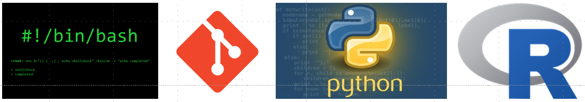

Practical Programming for Biologists
BIOL 51573 · University of Arkansas
Last updated 02 November 2026
Welcome

This book accompanies BIOL 51573: Practical Programming for Biologists. It introduces the basics of scientific computing for biologists:
- organizing projects and files
- working at the Unix command line
- remote computing on a high-performance computing cluster
- version control with
gitand GitHub - programming in Python
- automating workflows
Each chapter mirrors what we do in class: Lecture. Demonstrate. Practice. Read the chapter, run the examples yourself, and work through the exercises as you go. You learn this material by typing it, not by reading it.
Before the first class
- Bookmark this book.
- Enroll in the DataCamp class.
- Register for an AHPCC user account. Your advisor is your sponsor, not the course instructor.
- Download
files.tgz. This archive holds all the example data we use in class (see Section 1.4.2).
How to read this book
Commands you type at the command line appear in shaded boxes:
When a command produces output, the output follows in a separate white box marked output. Almost all the output in this book was generated by actually running the command on the course data files, so you should see the same thing on your own computer (file dates, user names, and a few other details will differ).
Many Unix tutorials put a $ at the start of each command to stand for the
prompt, the text the shell prints when it is waiting for you to type. This
book leaves the $ off so you can copy and paste commands directly. Don’t type
the $ if you see it elsewhere.
Special boxes call out a few kinds of material:
Exercise 0.1
Exercise 1.1Exercises to do at your computer. They’re numbered by chapter.
Warning. Things that can destroy your data or waste your afternoon.
Shortcut. Tricks that will save you time.
Note. Background and asides.